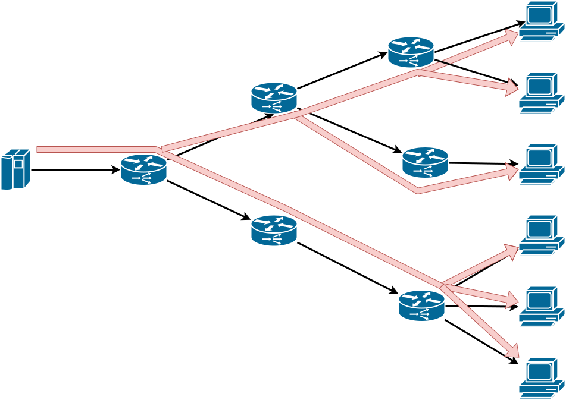

Sockets
Para se definir um socket a partir de um host é necessário identificar o outro fim da comunicação, isto é, o outro host, ou melhor, uma de suas interfaces de rede. Os sockets são então a abstração dos canais de comunicação, mas como dito antes, é necessário definir também os protocolos usados por estes sockets. O primeiro protocolo é o de endereçamento, que define qual pilha de protocolos usar, na camada 3. No caso da pilha IP, usa-se o protocolo AF_INET ou PF_INET. Escolhido o protocolo,
- cada interface tem um endereço MAC, na camada 2, que a identifica entre as interfaces na mesma rede local, e
- cada interface tem um endereço IPv4/IPv6 de 32/128 bits, que o indentifica entre todos os hosts na Internet.1
Mas dentro de um host, podem haver diversas aplicações sendo executadas. Como identificar exatamente com qual se quer conversar? Isto é feito pela definição uma porta:
- Porta: inteiro de 16 bits
- Associadas a serviços pela Internet Assigned Numbers Authority, IANA.
- Portas "Bem conhecidas": 0-1023
- Portas Proprietárias: 49151
- Portas Dinâmicas: 65535
Também é necessário definir o protocolo de transporte dos dados, na camada 4. Novamente, no caso da pilha IP, pode-se usar TCP (SOCK_STREAM) ou UDP (SOCK_DGRAM).
A API usada para estabelecer a conversa via socket tem várias chamadas, que devem ser executadas na ordem certa no processo iniciando a conversa e naquele que aceita participar da mesma. Comecemos estudando o TCP.
TCP
O fluxograma da criação de um socket TCP é apresentado na seguinte figura:
Estabelecido o socket, o mesmo pode ser usado como um arquivo, isto é, lendo-se e escrevendo-se bytes. O que exatamente deve ser escrito e como o que é lido deve ser interpretado é o protocolo da camada 7, sua responsabilidade.
Vejamos um exemplo do uso de sockets, em Python, descrito no arquivo server.py.2
1 2 3 4 5 6 7 8 9 10 11 12 13 14 15 16 | |
Para executá-lo, execute o seguinte comando em um terminal.
1 | |
Em outro terminal, execute um dos dois comandos a seguir. 3
1 | |
1 | |
No segundo terminal a mensagem
Thank you for connecting
será impressa, enquanto no primeiro veremos algo como
('Got connection from', ('127.0.0.1', 57801))
O que está acontecendo aqui é um processo criou um socket e ficou aguardando uma conexão, usando o código em Python. Tanto o telnet quando o netcat são programas genéricos para se conversar com outro processo usando TCP/IP. Aqui, estes programas simplesmente se conectaram e imprimiram o que quer que o primeiro processo lhes tenha enviado, assumindo que correspondia a uma string, o que neste caso é correto. Simples, não é mesmo?
Duas observações importantes a serem feitas aqui. A primeira é que, em geral, denominamos o processo que fica aguardando a conexão de servidor e o processo que se conecta de cliente. Isto por quê, em geral, o servidor executa alguma tarefa, serve, o cliente, embora isto não seja necessariamente verdade.
Por completude, vamos também escrever o código do cliente, agora que você já sabe que o servidor funciona. Do lado cliente, estabelece-se uma conexão apontando-se para onde está o servidor.
1 2 3 4 5 6 7 8 9 10 11 12 13 14 | |
E para se executar o cliente, faça:
1 | |
Observe que o socket.close() encerra a conexão do lado de quem invoca. Na contraparte, invocações a socket.recv() retornam com 0 bytes lidos.
A título de comparação, em Java, a criação do socket do lado do servidor seria muito mais simples, consistindo apenas em:
1 | |
O cliente em Java também é simplificado.
1 | |
Exercício: Múltiplos Pacotes
Façamos agora uma modificação no código do servidor para que envie não uma, mas três mensagens para o cliente, e que o cliente durma um pouco após receber a primeira mensagem. Isto é, modifique seu servidor assim
1 2 3 4 | |
Agora execute novamente o cliente e veja o que acontece. Consegue explicar o fenômeno?
Modifiquemos o cliente agora, para que tenha três recv, assim.
1 2 3 4 5 6 7 8 9 10 11 12 13 14 15 16 | |
E agora, o que acontece? A saída é como esperava? Como explica este fenômeno e como poderia corrigí-lo?
Exercício: Ping-Pong
Modifique cliente e servidor tal que o cliente envie uma mensagem passada na linha de comando ao servidor e fique esperando uma resposta, e tal que o servidor fique esperando uma mensagem e então solicite ao operador que digite uma resposta e a envie para o cliente. O loop continua até que o usuário digite SAIR, e a conexão seja encerrada.
| Terminal 1 | Terminal 2 |
|---|---|
| python server.py | python client.py |
| Esperando conexão. | conectando-se ao servidor |
| Conectado | Conectado |
| Esperando mensagem | Digite mensagem: lalala |
| Mensagem enviada | |
| Mensagem recebida: lalala | Esperando resposta |
| Digite resposta: lelele | |
| Resposta enviada. | Resposta recebida: lelele |
| Digite mensagem: SAIR | |
| Desconectando. | |
| Conexão encerrada. | |
| Esperando conexão. |
Observe que para ler do teclado em Python 2 você deve usar x = raw_input(), enquanto que em Python 3 seria x = input(). Além disso, em Python 2, você deve remover as invocações para encode e decode.
UDP
No exemplo anterior, usamos o protocolo TCP (o padrão da API). Caso quiséssemos usar UDP, precisaríamos nos atentar a alguns detalhes.
A criação do socket é feita explicitando-se o uso de datagramas: s = socket.socket(socket.AF_INET,socket.SOCK_DGRAM)
Um servidor UDP não executa listen ou accept e, em Python, simplesmente executa data, addr = sock.recvfrom(4096) para receber o datagrama, onde data é o conteúdo recebido e addr o endereço de quem enviou o datagrama.
Neste caso, um mesmo socket é usado para manter comunicação com múltiplos interlocutores. Para enviar uma resposta a um interlocutor em específico, addr é usado: sent = sock.sendto(data, addr), onde sent é a quantidade de bytes enviados.
Além deste detalhe, é importante manter em mente outras características do UDP:
- falta de ordem
- falta de confiabilidade
- menos dados lidos que enviados.
- mais dados lidos que enviados (pode acontecer também no TCP)
Com tantas dificuldades para se usar o UDP, fica a questão: para que serve UDP?
Exercício: Ping-Pong UDP
Modifique o código do exercício Ping-Pong para usar UDP em vez de TCP na comunicação entre nós. Execute múltiplos clientes ao mesmo tempo. Como o seu servidor lida com isso? Modifique-o para mandar um "eco" da mensagem recebida de volta ao remetente.
IP-Multicast
Imagine que você tenha que enviar um stream de vídeo para um amigo mostrando como você está jogando o mais novo jogo da velha no mercado. Qual protocolo de transporte você usaria? TCP, provavelmente, já que garante a entrega ordenada dos pacotes do vídeo. Como você já sabe, o TCP envia confirmações de pacotes recebidos e usa uma janela deslizante para determinar quais pacotes reenviar, o que pode causar interrupções na execução do vídeo. Além do mais, as pessoas provavelmente preferirão perder alguns quadros que perder a sincronia com sua excitante partida. Parece que uma opção melhor seria então usar UDP, correto?
Imagine agora que os mesmos dados devam ser enviados para múltiplos destinatários (você está ficando famoso!) Com múltiplos destinatários, múltiplos controles precisariam ser mantidos no TCP, o que pode se tornar custoso; mais uma razão para usar UDP!
Para terminar, lhe darei uma razão final: IP-Multicast! Multicast, em oposição ao Unicast, é a capacidade de enviar mensagens para um grupo de destinatários, em vez de apenas um.

IP-Multicast é uma implementação desta ideia, usando umaa configuração específica do UDP, associada a recursos dos comutadores de rede, para otimizar o envio dos mesmos dados a múltiplos destinatários. Grupos são identificados por endereços IP especiais, conhecidos como Classe D (224.0.0.0-239.255.255.255), e propagados pela rede. A seguinte tabela descreve os usos das sub-faixas de endereços.4
| Endereço | Uso |
|---|---|
| 224.0.0.0-224.0.0.255 | Multicast local - Usado por protocolos L2, como EIGRP e OSPF |
| 224.0.1.0-224.0.1.255 | Multicast roteaddo - Usado por protocolos L3 |
| 232.0.0.0-232.255.255.255 | Source Specific Multicast - Receptores definem fontes confiáveis |
| 233.0.0.0-233.255.255.255 | Reservado para detentores Autonomous Systems |
| 239.0.0.0-239.255.255.255 | Reservado para IANA |
| Resto | Uso geral |
Quando um pacote é enviado para o endereço do grupo, todos os membros do grupo recebem tal mensagem. Melhor dizendo, todos os membros podem receber a mensagem, mas como estamos falando de UDP, é possível que alguns não recebam. Além disso, não há garantia qualquer sobre a ordem de recepção das mensagens.
Apenas reforçando, IP-Multicast só funciona com UDP, pois lidar com retransmissões em um grupo grande levaria a um estado imenso sendo mantido na origem dos dados. Outro ponto importante é que pelo podencial desestabilizador do IP-Multicast, ele é normalemente limitado à pequenas seções das redes.
Mas experimentemos com esta tecnologia na prática. Criemos um programa que criar Socket UDP, associa-o a um grupo, e recebe pacotes destinados ao grupo.
1 2 3 4 5 6 7 8 9 10 11 12 13 14 15 16 17 18 19 20 21 22 | |
Instancie múltiplos processos deste, na mesma máquina e em máquinas distintas. Agora criemos um programa que envia pacotes para o dito grupo.
1 2 3 4 5 6 7 8 9 10 11 12 13 14 15 16 17 18 19 20 21 | |
Observe como a mesma mensagem é recebida pelos vários membros e que como diferentes fontes tem seus pacotes recebidos.
A título de curiosidade, IP-Multicast também está presente em IPv6, mas com algumas pequenas diferenças
IP-Multicast em IPv65
In IPv6, the left-most bits of an address are used to determine its type. For a multicast address, the first 8 bits are all ones, i.e. FF00::/8. Further, bit 113-116 represent the scope of the address, which can be either one of the following 4: Global, Site-local, Link-local, Node-local.
In addition to unicast and multicast, IPv6 also supports anycast, in which a packet can be sent to any member of the group, but need not be sent to all members.''
Exercício: IP-Multicast
Implemente e teste o seguinte receiver, colocando várias instâncias para executar em múltiplos terminais, ao mesmo tempo.
1 2 3 4 5 6 7 8 9 10 11 12 13 14 15 16 | |
Implemente e teste o seguinte sender.
1 2 3 4 5 6 7 8 | |
-
Endereços IP não públicos não servem como identificadores únicos na Internet. ↩
-
Você pode usar outro nome, desde que não seja
socket.py, e que adapte o comando para sua execução. ↩ -
O programa
telneté normalmente instalado por padrão tanto no Windows, OSX quanto no Linux. Já onetcatnormalmente precisa ser instalado por você. Em alguns sistemas, em vez denetcato comando é onc. ↩